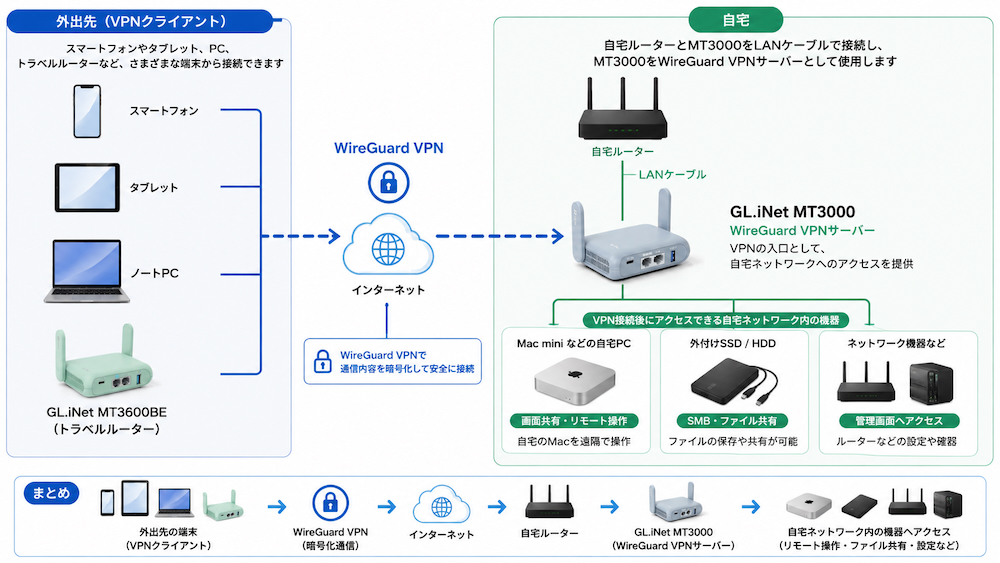

外出先から自宅ネットワークにつなぎたい
VPNを利用すると、外出先から自宅のネットワークに安全に接続できます。
自宅にいなくても、自宅のPCをリモート操作したり、共有ストレージのデータにアクセスしたりできるようになります。
例えば…
私の場合は、外出先から自宅のMac miniを画面共有で操作したいと思ったことが、VPNサーバーを構築したきっかけです。
VPNで自宅のネットワークに接続すると、外出先からPCをリモート操作したり、設定済みの共有ファイルにアクセスしたりできます。
また、自宅ネットワーク内にあるルーターなどの管理画面にも、外出先からアクセスできるようになります。
何が便利なの？
タブレットをノートPCのように活用できる
iPadなどのタブレットとキーボードがあれば、外出先から自宅のPCへリモート接続して、PCのアプリやデータを利用できます。
ノートPCを持っていなくても、外出先で必要なときに自宅のPC環境を利用できます。
自宅PCや外部ストレージが簡易NASのように使える
自宅PCでファイル共有を設定しておけば、外出先から自宅PCのデータへアクセスできます。
PCに接続している外付けSSDやHDDも共有できるため、自宅にあるストレージを簡易NASのように活用できます。
使っているもの
GL.iNet MT3000 (Beryl AX)
VPNサーバー側のルーターとして使用しています。
スペックは以下を参照。
| Wi-Fi | Wi-Fi 6（デュアルバンド） |
|---|---|
| Wi-Fi速度 | 2.4GHz：最大574Mbps 5GHz：最大2,402Mbps |
| 有線LAN | 2.5Gbps × 1ポート（WAN）、1Gbps × 1ポート（LAN） |
| USB | USB 3.0 × 1 |
| 電源 | USB Type-C（5V/3A） |
| 接続台数 | 70台以上 |
| VPN | WireGuard：最大300Mbps OpenVPN：最大150Mbps |
| サイズ・重量 | 120 × 83 × 34mm / 196g |
※VPN速度はメーカー公称値です。実際の速度はネットワーク環境によって異なり、VPNサーバーとして使用する場合は公称値より遅くなります。
持ち歩いているのは後継機のMT3600BEなのですが、余ったMT3000でVPNサーバーを構築しました。
MT3000はサーバーとして、MT3600BEはクライアントとして利用しています。
自宅のルーター
MT3000は自宅のルーターにLANケーブルで接続して使用しています。
自宅のルーターは、普段インターネット接続に使用しているもので構いません。
光回線事業者から提供・レンタルされているルーターや、ONUとルーターが一体になった機器でも使用できます。
外出先からMT3000のVPNサーバーへ接続できるように、自宅のルーター側でも設定が必要です。
VPNに接続する端末
スマートフォンやタブレット端末、ノートPCになどを使用します。
私はMT3000の後継機であるMT3600BEをクライアントとして使用しています。
ちなみに、その前はSFT1200をサーバー、MT3000をクライアントとして持ち歩いていました。
SFT1200は現在もアップデートの対象となっており、比較的安く手に入るため、コスパのいいVPNサーバーとして使えると思います。
実際の使用例
MT3000を自宅ルーターに接続する
まず、VPNサーバーとして使用するMT3000を自宅のネットワークに接続します。
自宅ルーターのLANポートとMT3000のWANポートをLANケーブルで接続し、MT3000の電源を入れます。
今回は、以下のような構成でVPNサーバーを設置します。

MT3000でWireGuardサーバーを設定する
MT3000の管理画面を開き、WireGuardサーバーの設定を行います。
管理画面の「VPN」から「WireGuardサーバー」を開きます。
「設定を作成」を選択すると、WireGuardサーバーの設定が自動で作成されます。
IPv4アドレスやリッスンポートなどは初期値が設定されているため、特に変更する必要がなければそのまま使用できます。
また、「オプション」から「リモートアクセスにLANサブネットを付与」をONにします。
この設定を有効にすると、VPN接続した端末から自宅LAN内の機器へアクセスできるようになります。
リッスンポートは自宅のルーター設定で使用します。メモを取っておいてください。
MT3000のIPアドレスを確認しておく
このあと自宅ルーターでポート開放を設定する際に、先ほど確認したリッスンポートと、MT3000のIPアドレスを使用します。
MT3000のIPアドレスは、管理画面の「インターネット」>「イーサネット」>「IPアドレス」で確認できます。
※192.168.8.1ではなく、自宅ルーターからMT3000に割り当てられたWAN側IPアドレス
MT3000のIPアドレスを固定する
自宅ルーターからMT3000に割り当てられるIPアドレスが変わると、ポート開放の転送先と一致しなくなってしまいます。
そのため、自宅ルーターの管理画面でMT3000のIPアドレスが変わらないように設定しておきます。
この機能は「DHCP予約」「固定割り当て」など、ルーターによって名称が異なります。
自宅のルーターでポート開放を設定する
MT3000を自宅ルーターの下に接続している場合、外出先から届いたWireGuardの通信をMT3000へ転送する設定が必要です。
自宅ルーターの管理画面でポート開放（ポート転送）の設定を行い、WireGuardで使用するポートをMT3000へ転送します。
設定項目の名称や設定方法はルーターによって異なります。
「ポート開放」「ポート転送」などの名称で設定されている場合があります。
外部からのWireGuard通信
自宅ルーター
プロトコル：UDP
ポート：WireGuardのリッスンポート
転送先：MT3000のIPアドレス
MT3000
WireGuardサーバー
MT3000でDDNSを設定する
外出先からVPNへ接続するためには、自宅のグローバルIPアドレスを接続先として指定する必要があります。
ただし、グローバルIPアドレスは変更されることがあるため、私はMT3000のDDNSを利用しています。
DDNSを利用すると、グローバルIPアドレスの代わりに固定のドメイン名を使って、自宅のMT3000へ接続できるようになります。
DDNSを有効にすると、MT3000に割り当てられたDDNSのドメイン名を確認できます。
このドメイン名は、このあとWireGuardクライアントの接続先を設定するときに使用します。
接続する端末の設定を作成する
次に、外出先からVPNへ接続する端末の設定を作成します。
MT3000のWireGuardサーバーでは、接続する端末ごとに「ピア」を追加し、クライアント用の設定を作成できます。
「ピアを追加」から接続する機器などの名前を入力し、「適用」を選択します。
QRコードが出てきますが、それを使用する前に「アドレス」から先ほど設定したDDNSのドメイン名を選択します。
DDNSを選択すると、クライアント設定の「Endpoint」がDDNSのドメイン名に変更されます。
QRコードまたは設定ファイルを使って、接続する端末にWireGuardの設定を登録します。
注意：
「アドレス」でDDNSを選択しても、この選択を保存するための「適用」ボタンはありません。
QRコードを表示したり設定ファイルをダウンロードしたりする際は、その都度DDNSが選択されていることを確認してください。
クライアントからVPNへ接続する
作成したピアの設定を、外出先で使用する端末に登録します。
スマートフォンやタブレット、PCから直接接続する方法と、MT3600BEなどのルーターをWireGuardクライアントとして使用する方法があります。
スマートフォン・タブレット・PCから接続する
スマートフォンやタブレットでは、WireGuardアプリをインストールし、MT3000で作成したピアのQRコードを読み取って設定を登録できます。
設定を有効にすると、自宅のMT3000へVPN接続できます。
MacなどのPCでは、WireGuardアプリにダウンロードした設定ファイル（.conf）をインポートして設定できます。
私は普段、MT3600BEをWireGuardクライアントとして使用しているため、MacにはVPNの設定をしていません。
MT3600BEから接続する
私は外出時にMT3600BEを持ち歩き、WireGuardクライアントとして使用しています。
MT3000で作成したピアの設定ファイル（.conf）をMT3600BEに登録することで、自宅のVPNサーバーへ接続できます。
MT3600BE側でVPNに接続するため、スマートフォンやタブレット、PCなど、それぞれの端末にVPNを設定する必要がありません。
「手動で追加する」を選択すると、新しいプロバイダーが作成されます。
「Home Network」など分かりやすい名前を付け、MT3000からダウンロードした設定ファイル（.conf）をアップロードします。
設定ファイルを登録すると、WireGuardクライアントの一覧に作成した設定が表示されます。
登録した設定のメニューから「開始」を選択すると、自宅のVPNサーバーへ接続できます。
また、「VPNダッシュボード」ではVPNトンネルを作成し、MT3600BEに接続している機器のうち、どの通信をVPN経由にするか設定できます。
すべての機器をVPN経由にするだけでなく、指定した機器や接続方法だけを対象にするなど、用途に合わせた設定ができます。
私の場合は、有線LANとプライマリーWi-FiをVPN、ゲストWi-FiをVPNにつながらない自分以外の利用者用として使い分けています。
自宅のMacを画面共有で操作する
VPNへ接続すると、外出先から自宅ネットワーク内のMacへアクセスできます。
私は自宅のMac miniで画面共有を有効にして、外出先からリモート操作できるようにしています。
VPN接続後、自宅のMac miniを指定して画面共有を開始すると、外出先から自宅のMacを操作できます。
また、Mac miniのIPアドレスが変わると接続できなくなるため、自宅ルーターのDHCP予約（固定割り当て）を利用して、IPアドレスが変わらないようにしています。
Macから接続する場合は、Finderの「移動」→「サーバへ接続」を開き、
vnc://Mac miniのIPアドレスを入力すると、macOS標準の「画面共有」で接続できます。
iPadやスマートフォンから操作する場合は、Jump DesktopなどのVNCに対応したリモートデスクトップアプリを使用します。
自宅の共有ファイルへアクセスする
VPNへ接続すると、自宅ネットワーク内で共有しているファイルにも外出先からアクセスできます。
私はMac miniの内蔵ストレージや、Mac miniに接続した外付けストレージを共有して利用しています。
SMBを使った共有ファイルへのアクセス方法は、USB共有のページでも紹介しています。
補足：Free Wi-FiでVPNを利用する
私は普段Free Wi-Fiを利用していませんが、ホテルやカフェなどのFree Wi-Fiを利用する場合にもVPNを活用できます。
MT3600BEをFree Wi-Fiへリピーター接続し、自宅のMT3000へVPN接続することで、MT3600BEと自宅のVPNサーバー間の通信を暗号化できます。
MT3600BEをFree Wi-Fiへ接続する方法は、旅行・外出先でのネット接続のページで紹介しています。
旅行・外出先でも快適にネットを使いたい →
注意点・うまくいかなかったこと
自宅のネットワーク設定を変更するときは注意
VPNを使って外出先から自宅のネットワーク設定を変更する場合は注意が必要です。
VPNサーバーや自宅PCのIPアドレス、ルーターの設定などを変更すると、設定を間違えたときにVPN接続が切れ、そのまま自宅へアクセスできなくなる可能性があります。
重要なネットワーク設定の変更は、できるだけ自宅で行う方が安心です。